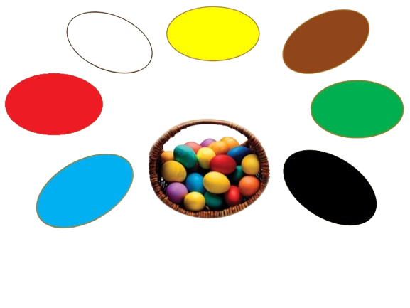
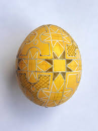
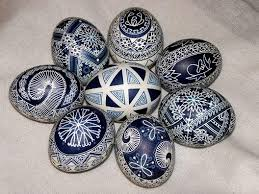
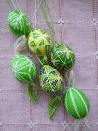
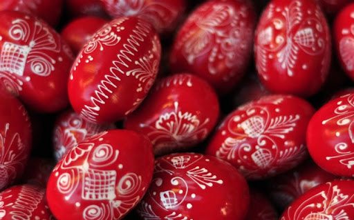
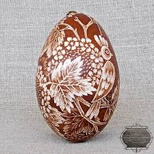
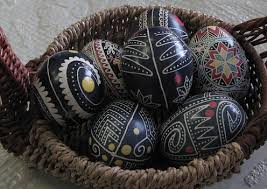

Щоб дізнатись більше про кожен з кольорів писанок, натисніть на обраний колір
Жовтий
Символізує світло (сонце, зірки, місяць), тепло, достаток, багатство, достигле зерно. Оберіг від зла.
Синій
Це вода і небо, повітря, знак небесної божественості. Символ насиченості, здоров'я сім'ї і роду.
Зелений
Молодість, відновлення, весна, нове життя. Пробудження, розвиток, циклічність в природі, спокій.
Червоний
Символ сонця, радості життя, любові, щасливого шлюбу, сили, жертовності. Кров – знак життя, воскресіння
Коричевий
Колір і його відтінки символізують Матір-землю, родючість, енергію росту, життєдайну силу землі.
Білий
Колір чистоти, символ вирію (раю), вищої сили, безгрішності. Основа і початок всього на писанці.
Чорний
Колір чорнозему, плодючості, врожаю. Знак невідомого, нескінченності душі. Підсилює інші кольори.